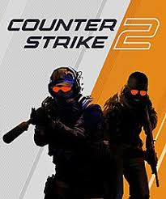

Παιχνίδια για το PlayStation 5
-
FIFA 2024
-

NBA 2K 2024
-
God of War
Παιχνίδια για PC Gaming
-

Call of Duty: Warzone
-

Counter-Strike 2
-
Grand Theft Auto V
Παιχνίδια για το Xbox
-
Grand Tourism
-
Need for Speed
-
Uncharted
Δημοφιλή Παιχνίδια
- FIFA 2024: Διαθέσιμο για PS5, Xbox και PC, το FIFA 2024 συνεχίζει να είναι ένα από τα πιο δημοφιλή παιχνίδια ποδοσφαίρου κάθε χρόνο.
- Call of Duty: Warzone: Με συνεχείς ενημερώσεις και νέο περιεχόμενο, το Call of Duty: Warzone παραμένει ένα από τα πιο hot παιχνίδια για PC, PS5 και Xbox.
- Horizon Forbidden West: Αποκλειστικό για το PS5, το Horizon Forbidden West αναμένεται να είναι ένα από τα κορυφαία παιχνίδια δράσης και εξερεύνησης του 2024.
- Halo Infinite: Αναμένεται να κυκλοφορήσει για το Xbox και το PC, το Halo Infinite είναι ένα από τα πιο αναμενόμενα παιχνίδια FPS του έτους.
- Cyberpunk 2077: Παρόλο που κυκλοφόρησε πριν από μερικά χρόνια, το Cyberpunk 2077 συνεχίζει να είναι ένα από τα πιο δημοφιλή παιχνίδια RPG για PC, PS5 και Xbox.
- NBA 2K 2024: Η σειρά NBA 2K συνεχίζει να είναι δημοφιλής και το NBA 2K 2024 αναμένεται να είναι ένα από τα καλύτερα παιχνίδια μπάσκετ της χρονιάς.
Για περισσότερες πληροφορίες, επισκεφτείτε το σχετικό άρθρο εδώ.